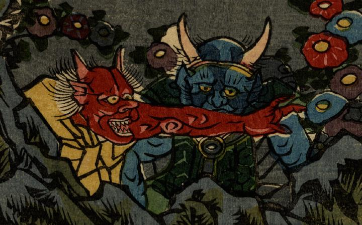

黄色い衣を身にまとった赤鬼。前方に腕を伸ばしている。
著作者：一勇齋國芳／出典：親書誌：U426_nichibunken_0266：大江山福壽酒盛；オオエヤマ フクジュ サカモリ／日付：2014／資源識別子：U426_nichibunken_0266_0023_0000
Copyright (c)2010- International Research Center for Japanese Studies, Kyoto, Japan. All rights reserved.